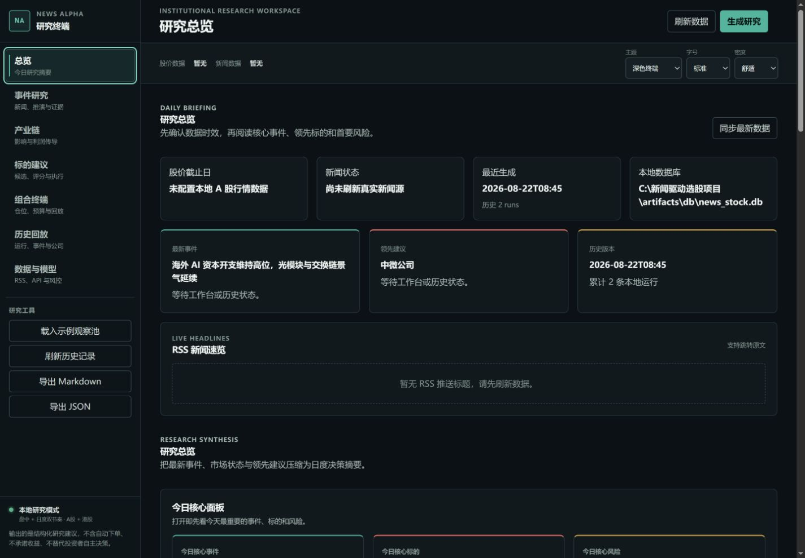

NewsItem / intake
先判断这是不是同一件事，以及信息是否可信。
系统对 RSS/Atom 新闻做标准化、URL 去重、标题聚类、地区和市场标记，并保留原始来源与发布时间。
- source
- published_at
- credibility
- cluster_id
- market_tags
Local-first intelligence / A-share + Hong Kong
从全球热点到产业链与 A/H 标的，保留每一步证据、催化剂和失效条件。
Bundled demo snapshot
示例事件
海外 AI 资本开支持高位，光模块与交换链景气延续演示内容不是实时市场观点，不构成投资建议。
点击五个环节，查看 News Alpha 如何把一条新闻逐层收敛为结构化研究建议。
NewsItem / intake
系统对 RSS/Atom 新闻做标准化、URL 去重、标题聚类、地区和市场标记，并保留原始来源与发布时间。
盘中优先回答“发生了什么、影响谁、还缺什么证据”；日度复盘补齐产业链、公司画像和失效条件。

新事件触发短链路提醒，突出方向、置信度和待确认点。
把新闻、事件、产业、公司和建议压缩成可回看的研究摘要。
保留每次运行版本，不用今天的信息覆盖当时的判断。
动作只是研究记录的一部分。系统同时保存依据、时间窗口、风险和观点失效条件。
买入、卖出、持有和观察都必须落在同一套字段中，便于比较、审计和历史复盘。
明确建议动作、有效窗口与当前置信度。
连接对应事件、产业环节和公司业绩弹性。
记录需要发生的验证信号和目标空间判断。
提前写明什么情况出现时必须放弃原观点。
默认演示链路不需要模型 API 或行情文件。真实 RSS 与 API Key 由用户在本地配置，不进入公共仓库。
PS> git clone https://github.com/wangfan36/news-event-stock-platform.git PS> cd news-event-stock-platform PS> powershell -ExecutionPolicy Bypass -File .\scripts\setup.ps1 PS> .\scripts\start.ps1
复制按钮只读取上方公开命令。
News Alpha 把隐私、可解释性和人工决策放在自动化之前。
RSS 配置、API Key、SQLite 历史和个人研究笔记默认留在用户机器。
模型可以补充和润色结构化文本，但不能改变规则引擎给出的动作方向。
建议必须能回到新闻、事件、产业链和公司四层依据。
产品目前是研究辅助工具，不连接券商、不管理真实仓位，也不承诺收益。最终决策始终由用户承担。
项目提供环境变量和本地配置入口，并在 CI 中运行敏感信息扫描。
页面中的事件和界面内容用于说明产品结构，不代表实时行情、实时建议或未来收益。本项目不构成投资建议。
当前版本采用 PolyForm Noncommercial License 1.0.0；历史 MIT 版本边界见完整授权说明。